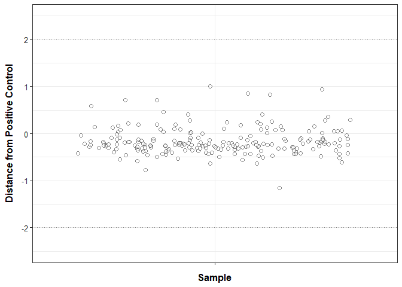
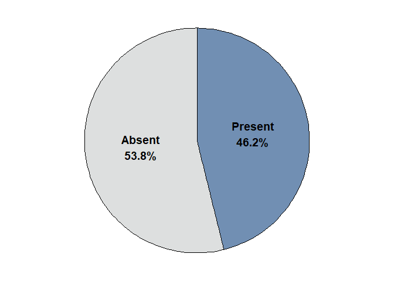
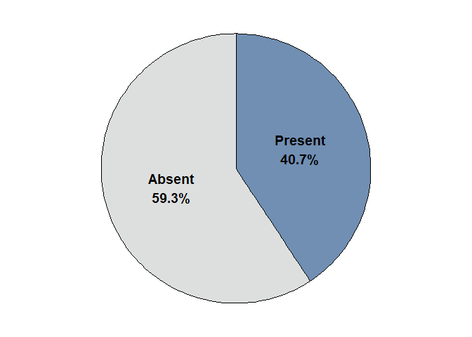
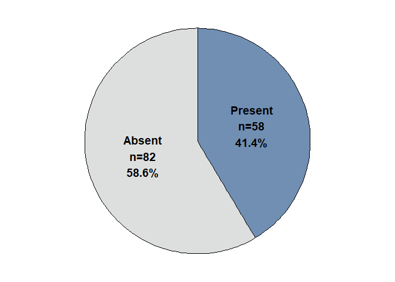

qPCR data sheets
.Rmd script
Load libraries
library(ggplot2) ## for plotting
library(dplyr) ## for data table manipulation
##
## Attaching package: 'dplyr'
## The following objects are masked from 'package:stats':
##
## filter, lag
## The following objects are masked from 'package:base':
##
## intersect, setdiff, setequal, union
library(tidyr) ## for data table manipulation
library(readr) ## for reading in tsv files
library(readxl) ## for reading in excel files
library(stringr) ## for data transformation
library(strex) ## for data transformation
library(writexl) ## for excel output
library(purrr) ## for data transformation
library(tidyverse) ## for data table manipulation
## ── Attaching core tidyverse packages ──────────────────────── tidyverse 2.0.0 ──
## ✔ forcats 1.0.0 ✔ tibble 3.2.1
## ✔ lubridate 1.9.3
## ── Conflicts ────────────────────────────────────────── tidyverse_conflicts() ──
## ✖ dplyr::filter() masks stats::filter()
## ✖ dplyr::lag() masks stats::lag()
## ℹ Use the conflicted package (<http://conflicted.r-lib.org/>) to force all conflicts to become errors
library(ggrepel) # For geom_text_repel
Reading in datafiles and merging into one large dataframe
### USER EDITS:
## 1. Replace path of files
## 2. In str_after_nth(file.ID, "results/", 1), make sure this matches the folder ending referenced in list.files
df <-
# list files in directory following a particular pattern
list.files(path = 'example input/qPCR_results/', pattern = ".xlsx", full.names = TRUE) %>%
# get the column names
set_names(.) %>%
# join all files together in one data frame by file ID, skipping first 19 rows
map_dfr(~read_xlsx(., skip = 19), .id = "file.ID") %>%
# turn file.ID into just plate information (plate.ID)
mutate(file.ID = str_after_nth(file.ID, "results/", 1),
file.ID = str_before_nth(file.ID, ".xlsx", 1)) %>%
dplyr::rename(plate.ID = file.ID, Sample_ID = Sample) %>%
## RI STRIPED BASS SPECIFIC CODE FOR SAMPLE ID MISMATCHES
mutate(Sample_ID = gsub(" #1", "_1", Sample_ID),
Sample_ID = gsub(" #2", "_2", Sample_ID))
head(df)
## # A tibble: 6 × 8
## plate.ID Well Fluor Target Content Sample_ID Cq Starting Quantity (S…¹
## <chr> <chr> <chr> <chr> <chr> <chr> <dbl> <lgl>
## 1 26 AUG 2024… A01 SYBR Libra… Unkn 1/17/24_… NA NA
## 2 26 AUG 2024… A02 SYBR Libra… Unkn 1/17/24_… NA NA
## 3 26 AUG 2024… A03 SYBR Libra… Unkn 1/17/24_… NA NA
## 4 26 AUG 2024… A04 SYBR Libra… Unkn 1/17/24_… 34.8 NA
## 5 26 AUG 2024… A05 SYBR Libra… Unkn 1/17/24_… NA NA
## 6 26 AUG 2024… A06 SYBR Libra… Unkn 1/17/24_… NA NA
## # ℹ abbreviated name: ¹`Starting Quantity (SQ)`
Reading in meta df
Sample ID from meta needs to match the Sample ID from the qPCR output
meta <- read_xlsx("example input/client_metadata_example.xlsx") %>%
## RI STRIPED BASS SPECIFIC CODE FOR SAMPLE ID ISSUES
## For other projects, address any Sample_ID differences (Sample_ID on qPCR output needs to match meta)
mutate(Sample_ID = gsub(" #1", "_1", Sample_ID),
Sample_ID = gsub(" #2", "_2", Sample_ID))
Spike information
For each sample, calculate the distance from the Positive Spike-in value.
spike_samples <- df %>%
## subset to spiked samples
filter(grepl("spike|pos", Sample_ID, ignore.case = TRUE)) %>%
## remove spike from SampleID column only if 'pos' is NOT in the Sample_ID
mutate(Sample_ID = case_when(
!grepl("pos", Sample_ID, ignore.case = TRUE) ~ str_before_nth(Sample_ID, " spike", 1),
TRUE ~ Sample_ID
)) %>%
## group by plate ID and sample ID
group_by(plate.ID, Sample_ID) %>%
## calculate average of spikes per plate and sample
## ungroup by Sample_ID so the next calculation is only done grouped by Plate
mutate(Filter_Cq = mean(Cq)) %>%
ungroup(Sample_ID) %>%
## calculate difference from plate's Cq value
mutate(Cq_diff = Filter_Cq - Filter_Cq[grepl("pos", Sample_ID, ignore.case = TRUE)]) %>%
ungroup(); spike_samples
## # A tibble: 480 × 10
## plate.ID Well Fluor Target Content Sample_ID Cq Starting Quantity (S…¹
## <chr> <chr> <chr> <chr> <chr> <chr> <dbl> <lgl>
## 1 26 AUG 202… G01 SYBR Libra… Unkn 1/17/24_… 10.5 NA
## 2 26 AUG 202… G02 SYBR Libra… Unkn 1/17/24_… 10.6 NA
## 3 26 AUG 202… G03 SYBR Libra… Unkn 1/17/24_… 10.8 NA
## 4 26 AUG 202… G04 SYBR Libra… Unkn 1/17/24_… 10.8 NA
## 5 26 AUG 202… G05 SYBR Libra… Unkn 1/17/24_… 10.5 NA
## 6 26 AUG 202… G06 SYBR Libra… Unkn 1/17/24_… 11.0 NA
## 7 26 AUG 202… G07 SYBR Libra… Unkn 1/17/24_… 10.8 NA
## 8 26 AUG 202… G08 SYBR Libra… Unkn 1/17/24_… 11.0 NA
## 9 26 AUG 202… G09 SYBR Libra… Unkn 1/17/24_… 10.7 NA
## 10 26 AUG 202… G10 SYBR Libra… Unkn 1/18/24_… 10.9 NA
## # ℹ 470 more rows
## # ℹ abbreviated name: ¹`Starting Quantity (SQ)`
## # ℹ 2 more variables: Filter_Cq <dbl>, Cq_diff <dbl>
## Remove any lab error samples
## RI Striped Bass only
## removing 2/21/24 DI Blank 1 (pipetting issue)
spike_samples <- spike_samples %>%
filter(!Sample_ID == "2/21/24_Tap Blank_1")
Plot those distance values and save to output folder
# Create a jitter position object
jitter_pos <- position_jitter(width = 0.45, seed = 123)
## Plot samples
spike_samples %>% dplyr::select(Target, Sample_ID, Cq_diff) %>% distinct() %>%
ggplot(., aes(x=Target, y = Cq_diff)) +
geom_hline(yintercept = c(-2, 2), linetype = "dotted", color = "grey50") +
geom_jitter(aes(fill = abs(Cq_diff) > 2),
size = 2, alpha = 0.5, color = 'black', shape = 21, #width = 0.45,
position = jitter_pos) +
scale_fill_manual(values = c("TRUE" = "red", "FALSE" = "white")) +
geom_text_repel(
aes(label = ifelse(abs(Cq_diff) > 2, Sample_ID, "")), position = jitter_pos,
size = 3, box.padding = 0.5, point.padding = 0.2, force = 2
) +
labs(
x = "Sample",
y = "Distance from Positive Control"
) +
theme_bw() +
## keep y axis at least -2,2 but extend to max
coord_cartesian(
ylim = c(
min(-2.5, min(spike_samples$Cq_diff, na.rm = TRUE)),
max(2.5, max(spike_samples$Cq_diff, na.rm = TRUE))
)) +
## theme variables
theme(panel.background=element_rect(fill='white', colour='black'),
legend.position = "none",
axis.text.y = element_text(size=10, color="grey20"),
axis.text.x = element_blank(),
axis.title.y = element_text(margin = margin(t = 0, r = 10, b = 0, l = 0), size=12, face="bold"),
axis.title.x = element_text(margin = margin(t = 10, r = 0, b = 0, l = 0), size=12, face="bold"))

ggsave("example output/Inhibition.png", width=5, height=4)
Filter data Cq, Number of Replicates, and Copy Num calculations
## USER EDITS: Replace values below with species-specific assay values for copy number calculation
yint <- 38.183
slope <- -3.386
## Complete calculations
filters_df <- df %>%
## subset out the spiked samples
filter(!grepl("spike|pos", Sample_ID, ignore.case = TRUE)) %>%
## group by plate ID and sample ID
group_by(plate.ID, Sample_ID) %>%
## calculate average of Cq per plate and sample, replacing NaN with NA
mutate(Filter_Cq = if_else(is.nan(mean(Cq, na.rm = TRUE)), NA_real_, mean(Cq, na.rm = TRUE))) %>%
## calculate # of replicates
mutate(Filter_Num_Replicates = sum(!is.na(Cq))) %>%
## calculate copy number
mutate(Filter_Copy_Num = 10^((Filter_Cq-yint)/slope)) %>%
## summarize df with specific columns
dplyr::select(plate.ID, Sample_ID, Filter_Cq, Filter_Num_Replicates, Filter_Copy_Num) %>%
distinct() %>% ungroup()
Addressing duplicate samples (a.k.a., re-runs)
This code assumes the user wants to always use the most recent plate if completing a sample for a 2nd time. If this is not the case, chat with Fisheries team to make sure code reflect user’s needs.
filters_df <- filters_df %>%
## Separating Plate.ID into Date and Plate Number
separate(plate.ID, c("Plate_date", "Plate_number"), sep = " PLATE") %>%
## Change Date column to a Date format
mutate(Plate_date = dmy(Plate_date)) %>%
## Group by Sample_ID and keep only the row with the most recent date
group_by(Sample_ID) %>%
slice_max(Plate_date, n = 1, with_ties = FALSE) %>% ungroup()
## confirm the number of rows matches the number of unique Sample IDs (output should be TRUE)
nrow(filters_df) == length(unique(filters_df$Sample_ID))
## [1] TRUE
Combing with meta and collapsing by sample
samples_df <- filters_df %>% right_join(meta, ., by = "Sample_ID") %>%
group_by(Date, Sample_Location) %>%
## mutate to average
mutate(Sample_Cq = if_else(is.nan(mean(Filter_Cq, na.rm = TRUE)),
NA_real_, mean(Filter_Cq, na.rm = TRUE)),
Sample_Num_Replicates = mean(Filter_Num_Replicates),
Sample_Copy_Num = if_else(is.nan(mean(Filter_Copy_Num, na.rm = TRUE)),
NA_real_, mean(Filter_Copy_Num, na.rm = TRUE))) %>%
ungroup() %>%
## summarizing df
dplyr::select(Date, Sample_Location, Sample_Type, Number_of_Filters,
Sample_Cq, Sample_Num_Replicates, Sample_Copy_Num) %>%
distinct() %>%
## adding new SampleID back in
unite(Sample_ID, Date, Sample_Location, sep = " ", remove=F)
head(samples_df)
## # A tibble: 6 × 8
## Sample_ID Date Sample_Location Sample_Type Number_of_Filters
## <chr> <dttm> <chr> <chr> <lgl>
## 1 2024-01-17 … 2024-01-17 00:00:00 DI Blank #1 Blank NA
## 2 2024-01-17 … 2024-01-17 00:00:00 DI Blank #2 Blank NA
## 3 2024-01-17 … 2024-01-17 00:00:00 GBP_OCA Field NA
## 4 2024-01-17 … 2024-01-17 00:00:00 IPC_GCO Field NA
## 5 2024-01-17 … 2024-01-17 00:00:00 IPC_BBC Field NA
## 6 2024-01-17 … 2024-01-17 00:00:00 NAN_EDI Field NA
## # ℹ 3 more variables: Sample_Cq <dbl>, Sample_Num_Replicates <dbl>,
## # Sample_Copy_Num <dbl>
Normalizing data
## normalize data
normalized_df <- samples_df %>%
## take log10 of copy number
mutate(Sample_Copy_Num_normalized = log10(Sample_Copy_Num + 1))
## create an outlier cut-off
cutoff <- median(normalized_df$Sample_Copy_Num_normalized, na.rm = TRUE) +
3*IQR(normalized_df$Sample_Copy_Num_normalized, na.rm=TRUE)
## filter based on the outlier cut-off (if log sample copy num is above cut-off, change to NA)
normalized_df <- normalized_df %>%
mutate(Sample_Copy_Num_normalized =
if_else(Sample_Copy_Num_normalized > cutoff, NA_real_, Sample_Copy_Num_normalized)) %>%
## calculate relative abundance based on this log normalized value to a value 0-1
mutate(Relative_Abundance =
(Sample_Copy_Num_normalized - min(Sample_Copy_Num_normalized, na.rm=TRUE))/
(max(Sample_Copy_Num_normalized, na.rm=TRUE) - min(Sample_Copy_Num_normalized, na.rm=TRUE))
)
Adding present/absent information
normalized_df <- normalized_df %>%
mutate(Detection = case_when(
is.na(Sample_Copy_Num_normalized) ~ "Absent",
TRUE ~ "Present"
))
Blank specific information
blank_df <- normalized_df %>% subset(Sample_Type == "Blank")
detection_counts <- blank_df %>%
count(Detection) %>%
mutate(percentage = n / sum(n) * 100,
label = paste0(Detection, "\n", round(percentage, 1), "%"))
ggplot(detection_counts, aes(x = "", y = n, fill = Detection)) +
geom_bar(stat = "identity", width = 1, color = "black", alpha=0.75) +
coord_polar("y", start = 0) +
geom_text(aes(label = label),
position = position_stack(vjust = 0.5),
size = 5,
fontface = "bold") +
theme_void() +
theme(legend.position = "none",
#plot.title = element_text(hjust = 0.5, size = 16, face = "bold")
) +
scale_fill_manual(values = c("#D2D4D4", "#426999"))

ggsave("example output/Blanks_piechart.png", width=4, height=4)
Sample preliminary data
Pie chart
fieldsamples_df <- normalized_df %>% subset(Sample_Type == "Field")
field_detection_counts <- fieldsamples_df %>%
count(Detection) %>%
mutate(percentage = n / sum(n) * 100,
label = paste0(Detection, "\n", round(percentage, 1), "%"))
ggplot(field_detection_counts, aes(x = "", y = n, fill = Detection)) +
geom_bar(stat = "identity", width = 1, color = "black", alpha=0.75) +
coord_polar("y", start = 0) +
geom_text(aes(label = label),
position = position_stack(vjust = 0.5),
size = 5,
fontface = "bold") +
theme_void() +
theme(legend.position = "none",
#plot.title = element_text(hjust = 0.5, size = 16, face = "bold")
) +
scale_fill_manual(values = c("#D2D4D4", "#426999"))

ggsave("example output/Fields_piechart.png", width=4, height=4)
Bar chart
fieldsamples_df %>%
filter(!is.na(Relative_Abundance)) %>%
ggplot(., aes(x=Sample_ID, y=Relative_Abundance)) +
#ggplot(., aes(x=Sample_Location, y=Relative_Abundance)) +
#geom_point(size = 2, alpha=0.75, color = 'black', fill = '#426999', shape=21) +
geom_bar(stat = "identity", width = 0.7, fill = '#426999', alpha=0.75) +
#facet_wrap(~Date) +
labs(
y="Relative Abundance",
x = "Sample Location"
) +
theme_bw() +
## theme variables
theme(panel.background=element_rect(fill='white', colour='black'),
legend.position = "none",
axis.text.y = element_text(size=8, color="grey20"),
axis.text.x = element_text(size=6, color="grey20", angle=90, hjust=1, vjust=0.5),
axis.title.y = element_text(margin = margin(t = 0, r = 10, b = 0, l = 0), size=10, face="bold"),
axis.title.x = element_text(margin = margin(t = 10, r = 0, b = 0, l = 0), size=10, face="bold"),
# New theme elements for strip appearance
strip.background = element_rect(fill = "white", color = "black"),
strip.text = element_text(face = "bold", size = 9)
)

ggsave("example output/Fieldsample_relative_abundancev2.png", width = 9.5, height=5)